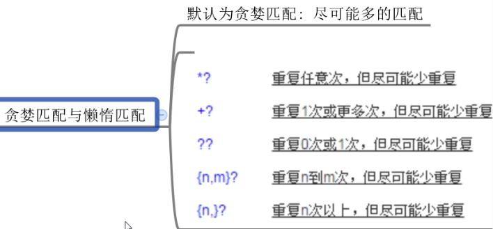

一个较为复杂的例子
articleDetail.content = articleDetail.content.replace(/<a [^>]*href=['"]([^'"]+)[^>]*>/g, '<p class="text_link_color" ng-click="' + "action.onOuterLinkClicked('$1')" + '">');
articleDetail.content=articleDetail.content.replace( /<\/a>/g,"</p>");
另外一个典型的例子
//偶数个字符的正则匹配
temp=temp.replace(/\*\*!/g, function(match) {
i++;
if(i%2==0)
{
return match+' ';
}
else{return match}
});
console.log(temp);
另外一个典型的例子
//匹配 :.之间的字符串，并返回成数组
var temp='My name is:Jerry. My age is:12.'
function extractStr(){
var extractArr=[];
temp.replace(/:(\w+)\./g, function(match,$1) {
extractArr.push($1)
});
return extractArr
}
另外一个典型的例子
//实现一个函数rep,达到 a*a => a*;a*ab*bc*c => a*b*c*;*babc*bc*c => a*babc*bc*的需求
function rep(s){
return s.replace(/(\w)\*\1/g,'$1*')
}
//注解： ‘\1’ 匹配的是 所获取的第1个()匹配的引用。例如，’(\d)\1’ 匹配两个连续数字字符。如33aa 中的33，但是34就不匹配，因为\1必须也是3才行。
‘\2’ 匹配的是 所获取的第2个()匹配的引用。
/?!(xxx)./ 表示不匹配xxx字符串
